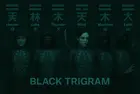
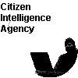

📰 AI-drevet Politisk Efterretningsmedie
Forandrer parlamentarisk journalistik med fuldautomatisk AI-nyhedsgenerering — dækker svenske og europæiske parlamenter på 14 sprog uden menneskelige redaktører
🇸🇪 Riksdagsmonitor
Verdens første fuldt AI-drevne politiske efterretningsredaktion for den svenske Riksdag. 10 agentiske arbejdsgange producerer autonomt dybdegående politisk analyse — ikke overfladiske resuméer, men struktureret efterretning der dækker 349 medlemmer, 3,5M+ stemmer og 50+ års data.
- 10 autonome AI-nyhedsarbejdsgange (9 planlagte + 1 on-demand)
- Dækning på 14 sprog inklusive arabisk og hebraisk RTL
- Kildeverifikation via 32 MCP-værktøjer der forespørger officielle Riksdagsdata
- GDPR-kompatibel OSINT med WCAG 2.1 AA tilgængelighed
🇪🇺 EU-parlamentsmonitor
Automatiseret flersproget nyhedsplatform der overvåger Europa-Parlamentets aktiviteter med agentisk intelligens. AI-genereret dækning af plenarsessioner, udvalgsrapporter, lovforslag og aktuelle politiske udviklinger.
- AI-genereret politisk analyse på 14 sprog
- Udvalgsrapporter, lovforslag, beslutningsforslag, nyheder
- Ugentlig og månedlig efterretningsoversigt
- Drevet af European Parliament MCP Server (61 værktøjer)
🔌 European Parliament MCP Server
Model Context Protocol-server der giver AI-assistenter struktureret adgang til Europa-Parlamentets åbne data. 61 værktøjer inklusive 15 OSINT-efterretningsværktøjer til MEP-indflydelsesscoring, koalitionsanalyse og anomalidetektion.
- 61 MCP-værktøjer (15 OSINT-efterretning + 46 dataadgang)
- MEP-indflydelsesscoring, koalitionsdynamik, tidlig advarsel
- Typesikker TypeScript med GDPR Artikel 30 revisionslogning
- SLSA Niveau 3 forsyningskædesikkerhed
🌟 Hvorfor vælge Hack23 AB?
Sveriges eneste cybersikkerhedsrådgivning med et fuldt offentligt ISMS, der demonstrerer gennemsigtighed og sikkerhedsmæssig ekspertise, som fremskynder innovation i stedet for at hæmme den.
Kerneforskelle
🔓 Radikal Gennemsigtighed
Sveriges eneste fuldt offentlige informationssikkerhedsstyringssystem (ISMS) med 93 ISO 27001-kontroller, redigerede risikoregistre og komplet politikdokumentation åbent tilgængelig. Se præcis, hvordan vi implementerer sikkerhed—ingen skjulte praksisser, intet sikkerhedsteater.
- 70% offentligt / 30% ansvarligt redigeret dokumentation
- Live sikkerhedsmetrik via OpenSSF Scorecard
- Transparente risikovurderinger og behandlingssporing
🎯 Dokumenteret Ekspertise
Over 30 års praktisk erfaring med softwareudvikling og sikkerhedsarkitektur, understøttet af branchens førende certificeringer og virkelige virksomhedsimplementeringer.
- Certificeret Information Systems Security Professional (CISSP), Certificeret Information Security Manager (CISM) sikkerhedsprofessionel
- AWS Security Specialty & Solutions Architect Pro
- Ledede sikkerhedsprogrammer hos Stena AB, Polestar, WirelessCar og andre større virksomheder
⚡ Sikkerhed Fremskynder Innovation
Sikkerhedsaktiveret udvikling der integreres problemfrit i DevSecOps-arbejdsgange. Vi beviser, at korrekte sikkerhedskontroller fremskynder—ikke blokerer—innovation og time-to-market.
- SLSA Level 3 forsyningskædesikkerhedsimplementeringer
- Automatiseret efterlevelsesvalidering & CI/CD-integration
- Zero-trust-arkitekturer med virkelig ydelse
Praktisk Værdi
🛠️ Praktiske Løsninger
Ingen sikkerhedsteater—kun implementerbare løsninger testet i produktion. Vores open source-projekter demonstrerer sikkerhedsbest practices med målbare resultater.
- Open source-sikkerhedsværktøjer anvendt i produktion
- Dokumenterede trusselmodeller & sikkerhedsarkitekturer
- Virkelige AWS multi-region resiliensmønstre
📊 Målbare Resultater
Datadrevet sikkerhed med kvantificerbare risikomålinger, automatiseret efterlevelsesovervågning og kontinuerlig forbedring demonstreret gennem offentlig dokumentation.
- Kvantitativ risikovurderingsmetodologi
- Sikkerheds-KPI'er tilpasset forretningsmål
- Automatiseret efterlevelseskortlægning (ISO/NIST/GDPR/NIS2)
🌍 Nordisk Innovationshub
Gøteborg-baseret ekspertise inden for cybersikkerhed, der kombinerer svensk innovationskultur med international virksomheds-erfaring på tværs af sektorerne for bilindustri, logistik og teknologi.
- Rådgivning på afstand eller personligt fremmøde (Gøteborg)
- Servicelevering på engelsk og svensk
- GDPR/NIS2-efterlevelse for det nordiske marked
🛡️ Informationssikkerhedsstyring
Demonstrere sikkerhed gennem gennemsigtighed. Vores offentlige Information Security Management System (ISMS) viser, hvordan virksomhedskvalitetskontroller muliggør innovation, konsulentleverance og produktudvikling. Få adgang til det løbende forbedrede dokumentationssæt og den styrende Information Security Policy, der dækker formål, principper, roller og vores risiko- og compliancemodel.
📋 Offentligt ISMS RepositoryLevende dokumentation: politikker, redigerede registre, resiliens- og sikker udviklingspraksis (~70% offentlig / 30% ansvarligt redigeret). |
🔒 InformationssikkerhedspolitikKernepolitik: formål, omfang, principper (Security by Design, Gennemsigtighed, Kontinuerlig Forbedring, Forretningsværdi), roller og dokumentkort. |
🔑 Sikkerhedstjenester
Professionelle cybersikkerhedsrådgivningstjenester leveret eksternt eller personligt i Gøteborg. Med over tre årtiers erfaring i softwareudvikling og sikkerhedsarkitektur leverer vi praktiske sikkerhedsløsninger, der integreres problemfrit i dine udviklingsprocesser uden at hæmme innovation.
🏗️ Sikkerhedsarkitektur og -strategi
Virksomheds sikkerhedsframeworks, risikovurdering og styring tilpasset forretningsmål.
- Virksomheds Sikkerhedsarkitektur
- Risikovurdering og -styring
- Udvikling af sikkerhedsstrategi
☁️ Cloud-sikkerhed og DevSecOps
AWS-sikkerhedsvurdering, Infrastructure as Code-sikkerhed, CI/CD-integration.
- Sikre cloud-løsninger (AWS Avanceret)
- DevSecOps-integration
- Container- og serverless-sikkerhed
🔧 Sikker udvikling og compliance
SDLC-sikkerhedsintegration, ISO 27001, GDPR/NIS2-compliance, OSPO-styring.
- CI/CD-sikkerhedsintegration
- Regulatorisk overensstemmelse (GDPR, NIS2, ISO 27001)
- Open Source Sikkerhed
🚀 Produkter
Åben kildekode leveringsmodel med fuld gennemsigtighed i arkitektur og sikkerhedsdokumentation

🥋 Black Trigram
Præcisionskampsimulator med 70 vitale punktsystem, 5 arketyper og autentiske koreanske kampsportsteknikker.
🔐 CIA Compliance Manager
Sikkerhedsvurderingsplatform med CIA-triade-evaluering og compliance-kortlægning til NIST, ISO 27001, GDPR, HIPAA, SOC2.

🔍 Citizen Intelligence Agency
Svensk politisk gennemsigtigheds-OSINT-platform med parlamentarisk overvågning og ansvarligheds-metrics.
💼 CEO James Pether Sörling
Ledelse og ekspertise
Virksomhedsledelse & Sikkerhedsekspert
CEO/Stifter af Hack23 AB. James har over 30 års erfaring med informationsteknologi med speciale i sikkerhedsarkitektur, cloud-sikkerhed og compliance. Professionelle certificeringer inkluderer CISSP, CISM, AWS Security Specialty og AWS Solutions Architect Professional.
🎯 Nøglekvalifikationer:
🏢 Seneste ledelsesroller:
- Jun 2025-nu: CEO / Stifter, Hack23 AB
- Okt 2024-jul 2025: Application Security Officer, Stena AB
- Mar 2022-sep 2024: Information Security Officer, Polestar
- Jan 2018-mar 2022: Senior Security Architect, WirelessCar
Seneste professionelle erfaring
Omfattende ledelseserfaring inden for virksomhedssikkerhed og cloud-arkitektur på tværs af store organisationer:
- Jun 2025-nu: Administrerende direktør, Hack23 AB - Svensk innovations-hub ledelse, Game Development Strategy
- Okt 2024-jul 2025: Application Security Officer, Stena AB - Risikovurdering, Cloud-sikkerhed, AI-styring
- Mar 2022-sep 2024: Information Security Officer, Polestar - ISMS-implementering, Sikkerhedscompliance, OSPO-leder
Kampsportsbaggrund
James har omfattende erfaring med traditionel koreansk kampsport, hvilket bringer autentisk viden til Black Trigram-projektet:
- 1999: Sort bælte Song Moo Kwan Korea - Traditionel Taekwondo-certificering
- 2024: 3. Dan Kukkiwon - World Taekwondo Headquarters-certificering
- 2015-2017: Taekwondo-instruktør, Tor Taekwondo klub - Undervisning af børneklasser
- 2002-2003: Taekwondo-instruktør, Haga Taekwondo club - Fællesskabsundervisning
- 1994-1996: Taekwondo-instruktør, Hworangi Taekwondo - Tidlig undervisningserfaring
Kampsportsfilosofi: Denne dybe forståelse af koreanske kampsportstraditioner påvirker direkte de autentiske teknikker, kulturelle respekt og uddannelsesmæssige værdi, der er integreret i Black Trigrams kampsystem.
Karrierehistorik
Virksomhedsarkitektur Erfaring
Sikkerhedsarkitektur- og konsulentroller hos førende teknologivirksomheder:
- Jan 2018-Mar 2022: Senior Security Architect, WirelessCar - Sikkerhedsarkitektur, AWS-sikkerhed, Sikker udvikling
- Jan 2018-Nov 2018: Consultant, Omegapoint - Security Architect role at WirelessCar
- Mar 2017-Jan 2018: Consultant, Consid AB - Open Source Development, CI/CD, AWS
- 2010-Mar 2017: Cloud Architect, Keypasco - Cloud-sikkerhedsløsninger, Flerlagsarkitektur
Nøglepræstationer: Grundlagde Hack23 AB i 2025, ledede Open Source Program Office hos Polestar, implementerede virksomhedssikkerhedsarkitekturer, talte ved Javaforum Göteborg, omtalt i Computer Sweden.
Softwareudviklingsbaggrund
Grundlæggende erfaringer inden for software engineering og systemudvikling:
- 2008-2009: Konsulent, Redpill Linpro - Teknisk support og kundeopgaver i Sverige, Norge, Danmark
- 2007-2008: Konsulent, Singlegrid (London) - Løsninger til kontinuerlig integration og build management
- 2006-2007: Systemudvikler, Sky (London) - J2EE-projekter med XP/Agile-udvikling
- 2003-2005: J2EE-udvikler, Glu Mobile (London) - Udvikling af mobile serviceprodukter
- 2000-2002: Softwareingeniør, Volantis Systems (London) - Multi-channel serverproduktdesign og -implementering
Tidlig karriere og militærtjeneste
Grundlæggende erfaringer, der formede ledelse og teknisk ekspertise:
- 1999-2003: Unix Helpdesk/Undervisningsassistent, Chalmers Tekniske Universitet - Systemadministration og tutorundervisning
- Jun-aug 1999: Visual C++ Programmør, IETV AB - Udvikling af produktionskontrolsystem
- 1996-1997: ABC-forsvarsgruppeführer, Svenske væbnede styrker - Ledelses- og sikkerhedsansvar
- 1993-1996: Stifter, Equal Rites BBS - Tidlig netværk og systemadministration (Fidonet node 2:203/454)
🎤 Tekniske foredrag og præsentationer
🎙️ Javaforum Göteborg
Præsentation om sikre arkitekturmønstre og bedste praksis for enterprise Java-applikationer.
▶️ Se præsentation🎙️ Shift Left Like A Boss
Sikkerhedspodcast gæsteoptrædener diskuterer DevSecOps-praksisser og forsyningskædesikkerhed.
🎧 Lyt til podcastPressedækning
Computer Sweden
Denne artikel fremhæver den innovative brug af teknologi til at afdække politikernes aktiviteter. Den præsenterer James Pether Sörlings arbejde med at udnytte datadrevne indsigter til at fremme gennemsigtighed i politiske processer.
Læs artikelRiksdag och Departement
En svensk publikation der diskuterer rollen af Citizen Intelligence Agency i overvågning af politikere. Den understreger James Pether Sörlings engagement i at fremme ansvarlighed i politik gennem strategisk brug af teknologi.
Læs artikelNational Democratic Institute
En omfattende undersøgelsesrapport, der understreger vigtigheden af parlamentariske overvågningsorganisationer i Sverige. Den anerkender James Pether Sörlings væsentlige bidrag til disse organisationer og bekræfter hans engagement i at styrke demokratiske processer.
Se rapportTidligere projekter
Sonar-CloudFormation-Plugin
SonarQube-plugin til analyse af AWS CloudFormation-skabeloner med sikkerhedsbedste praksis baseret på NIST, CWE og ISO-standarder.
Se alle badges
Kvalitet og sikkerhed
CIA Dashboard
Politisk aktivitetsdashboard for Sverige, der tilbyder omfattende visualiseringer af parlamentarisk aktivitet og politiske præstationsmålinger.
Se dokumentationOfte stillede spørgsmål
Almindelige spørgsmål om Hack23s cybersikkerhedstjenester, offentlige ISMS og tilgang til sikkerhedsrådgivning.
Hvad gør Hack23 AB anderledes end andre cybersikkerhedsrådgivningsfirmaer?
Hack23 AB driver Sveriges eneste fuldt offentlige informationssikkerhedsledelsessystem (ISMS), der demonstrerer radikal gennemsigtighed med 93 ISO 27001-kontroller offentligt dokumenteret. I modsætning til traditionelle rådgivningsfirmaer beviser vi vores sikkerhedspraksis gennem open source-projekter og målbare resultater.
Nøgleforskelle:
- Offentligt ISMS: 70% af vores sikkerhedskontroller er åbent tilgængelige til gennemgang
- Open Source: Alle vores sikkerhedsværktøjer og frameworks er tilgængelige på GitHub
- Dokumenteret Track Record: OpenSSF Scorecard-vurderinger og CII Best Practices-badges
- Sikkerhedsaktiveret Innovation: Vi viser, at korrekt sikkerhed fremskynder snarere end hæmmer innovation
Hvilke cybersikkerhedstjenester tilbyder Hack23 AB?
Vi tilbyder omfattende cybersikkerhedsrådgivningstjenester, herunder:
- Sikkerhedsarkitektur og -strategi: Design og implementering af robuste sikkerhedsframeworks
- Cloud-sikkerhed og DevSecOps: AWS-specialisering med SLSA Niveau 3 forsyningskædesikkerhed
- Sikker udvikling og kodekvalitet: Integration af sikkerhed i CI/CD-pipelines
- Compliance og regulering: ISO 27001, GDPR, NIS2, CRA-implementering og audit
- Open source-sikkerhed: OSPO-styring og risikovurdering af forsyningskæde
- Sikkerhedskultur og træning: Opbygning af sikkerhedsbevidsthed og bedste praksis
Alle tjenester leveres enten eksternt eller personligt i Gøteborg, Sverige, og tilbydes på engelsk og svensk.
Hvilke certificeringer har Hack23 AB?
Vores CEO James Pether Sörling har branchens førende certificeringer:
- CISSP: Certified Information Systems Security Professional fra (ISC)²
- CISM: Certified Information Security Manager fra ISACA
- AWS Certified Security - Specialty: Avanceret cloud-sikkerhedsekspertise
- AWS Certified Solutions Architect - Professional: Enterprise-arkitekturdesign
Disse certificeringer understøttes af over 30 års praktisk erfaring med softwareudvikling og sikkerhedsarkitektur, hvilket demonstrerer dyb teknisk ekspertise kombineret med strategisk sikkerhedsledelse.
Hvordan gavner Hack23s offentlige ISMS kunderne?
Vores offentlige ISMS giver enestående gennemsigtighed, der direkte gavner kunderne:
- Forudgående Verifikation: Gennemgå vores faktiske sikkerhedskontroller, risikovurderinger, politikker og overholdelses-dokumentation før engagement
- Reel Implementering: Se dokumenteret implementering af ISO 27001, GDPR, NIS2 og andre frameworks
- Evidensbaseret Ekspertise: Vores ekspertise demonstreres gennem dokumenteret evidens snarere end marketingpåstande
- Reference til Bedste Praksis: Brug vores offentlige ISMS som skabelon for dit eget sikkerhedsprogram
- Afbalanceret Gennemsigtighed: ~70% offentlig dokumentation med 30% ansvarligt redigeret for operationel sikkerhed
Besøg vores Offentlige ISMS Repository for at udforske vores sikkerhedskontroller og dokumentation.
Hvor ligger Hack23 AB, og arbejder I eksternt?
Hack23 AB er baseret i Gøteborg, Sverige (Org.nr 5595347807). Vi tilbyder fleksible samarbejdsmuligheder:
- Fjernkonsulenttjenester: Tjenester leveret på tværs af Europa og globalt via sikre eksterne kanaler
- Personlige Møder: Tilgængelige i Gøteborg-området og på tværs af Sverige
- Sprogunderstøttelse: Professionelle tjenester på engelsk og svensk
- Tidszone: Centraleuropæisk tid (CET/CEST)
Vores fjern-først tilgang understøttes af sikre kommunikationsprotokoller og samarbejdsværktøjer, hvilket sikrer effektiv levering uanset lokation.
Hvad er CIA Compliance Manager?
CIA Compliance Manager er vores flagskib open source-platform til sikkerhedsvurdering, der evaluerer Fortrolighed, Integritet og Tilgængelighed (CIA-triaden) med enterprise-funktioner:
- Automatiseret Vurdering: Omfattende evaluering af sikkerhedskontroller på tværs af alle tre CIA-domæner
- Forretningspåvirkningsanalyse: Kvantificer sikkerhedsrisici og deres forretningspåvirkning
- Compliance-Kortlægning: Automatisk mapping til NIST, ISO 27001, GDPR, HIPAA, SOC2 og CRA frameworks
- Trusselsmodellering: Integreret STRIDE-analyse og risikovisualisering
- Indsamling af Bevismateriale: Automatiseret dokumentation til audits og compliance-rapportering
Lær mere om CIA Compliance Manager funktioner og hvordan det demonstrerer vores praktiske tilgang til sikkerhedsautomatisering.
Hvordan griber Hack23 DevSecOps og sikker udvikling an?
Vi integrerer sikkerhed problemfrit i udviklingsworkflows uden at ofre hastighed:
- CI/CD Integration: Automatiseret sikkerhedstest i hver build-pipeline
- SLSA Niveau 3: Forsyningskædesikkerhed med proveniens-attestering og build-integritet
- Shift-Left Sikkerhed: Sikkerhedstest tidligt i udviklingslivscyklussen
- Kontinuerlig Overholdelse: Automatiseret validering mod sikkerhedsstandarder
- Sikkerhed som Kode: Infrastruktur og sikkerhedskontroller defineret i versionskontrol
- Open Source Bedste Praksis: OpenSSF Scorecard ratings og CII Best Practices badges
Vores open source-projekter demonstrerer real-world DevSecOps-implementering, der opretholder udviklingshastighed samtidig med at sikre sikkerhed. Besøg vores GitHub organisation for at se vores sikkerhedsautomatisering i aktion.
🔍 Gratis Tjekliste til Sikkerhedsvurdering
Download vores omfattende 95-punkts sikkerhedsvurderingsguide. Vurder din organisations sikkerhedsniveau på tværs af 7 kritiske domæner: Arkitektur, Adgangskontrol, Databeskyttelse, Netværkssikkerhed, Sårbarhedsstyring, Incident Response og Compliance.
Baseret på ISO 27001, NIST CSF og CIS Controls • Brugt af Enterprise Sikkerhedsteams
Få Din Gratis Tjekliste📧 Kontakt Os
Har du et spørgsmål om vores tjenester eller vil diskutere dine sikkerhedsbehov? Vi vil gerne høre fra dig!
Måder at Kontakte Os På
- Email: info@hack23.com
- LinkedIn: Hack23 Virksomhedsside
- LinkedIn: CEO
- GitHub: Open Source Projekter